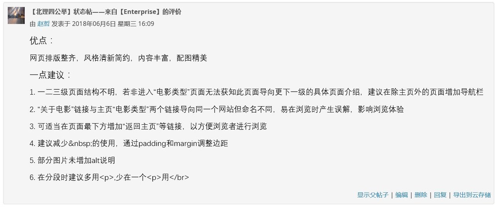

首页＞小组评价
网页排版整齐，风格清新简约，内容丰富，配图精美。
1. 一二三级页面结构不明，若非进入“电影类型”页面无法获知此页面导向更下一级的具体页面介绍，建议在除主页外的页面增加导航栏
2. “关于电影”链接与主页“电影类型”两个链接导向同一个网站但命名不同，易在浏览时产生误解，影响浏览体验
3. 可适当在页面最下方增加“返回主页”等链接，以方便浏览者进行浏览
4. 建议减少 的使用，通过padding和margin调整边距
5. 部分图片未增加alt说明
6. 在分段时建议多用<p>,少在一个<p>用</br>
